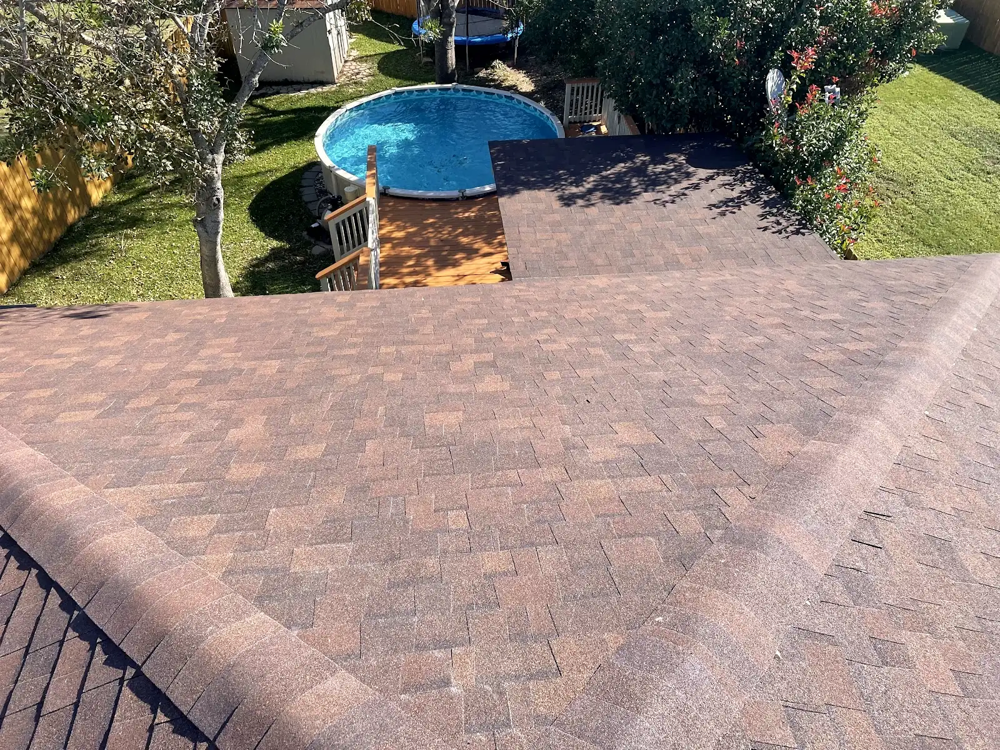
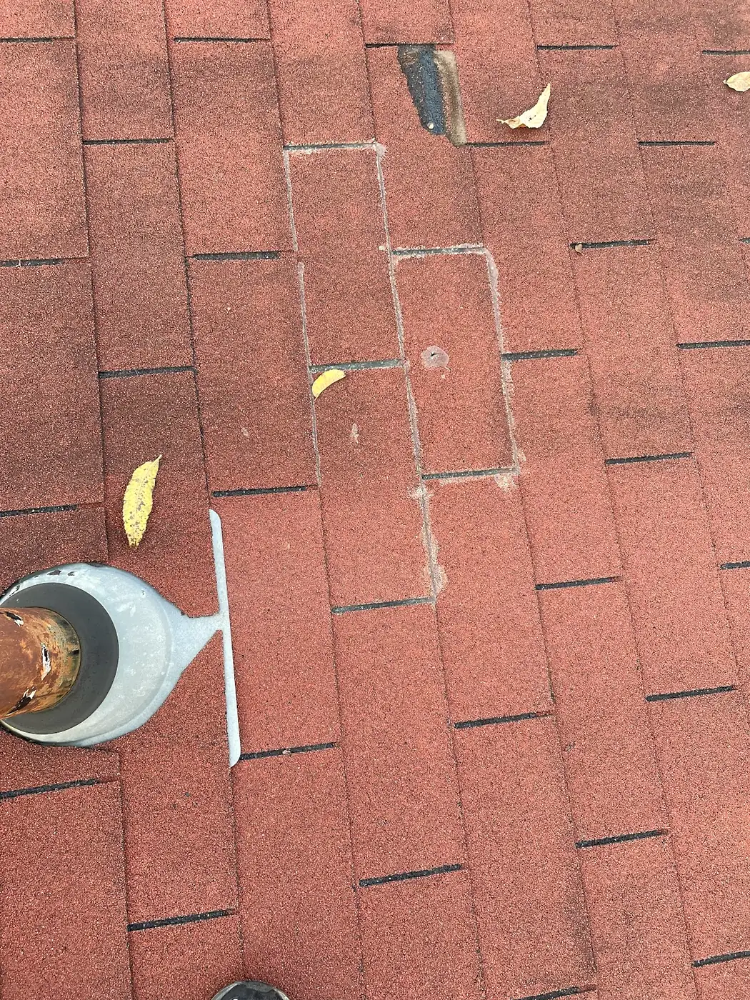
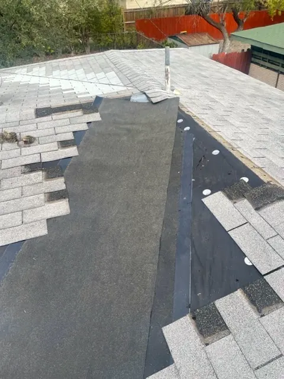
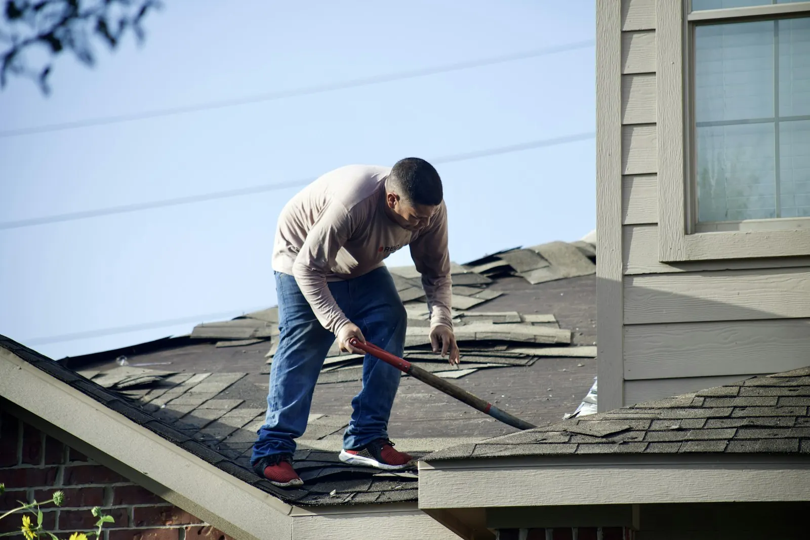
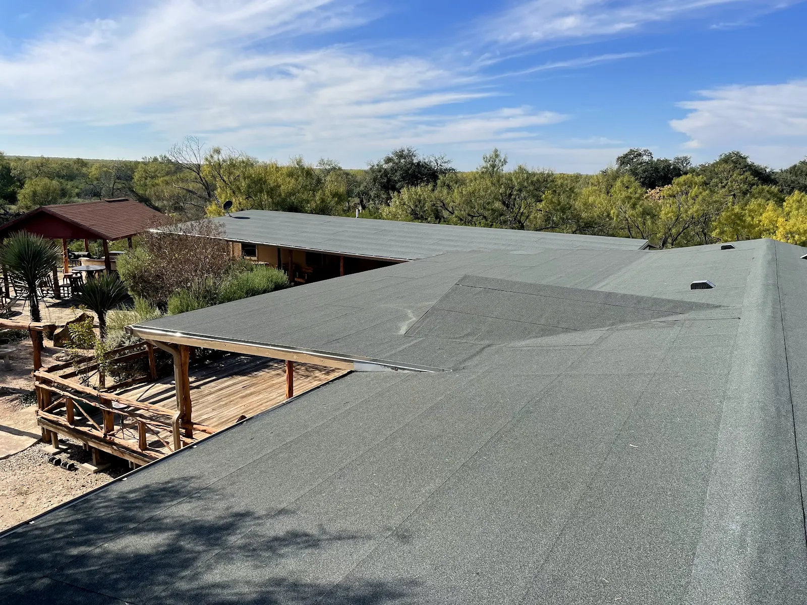
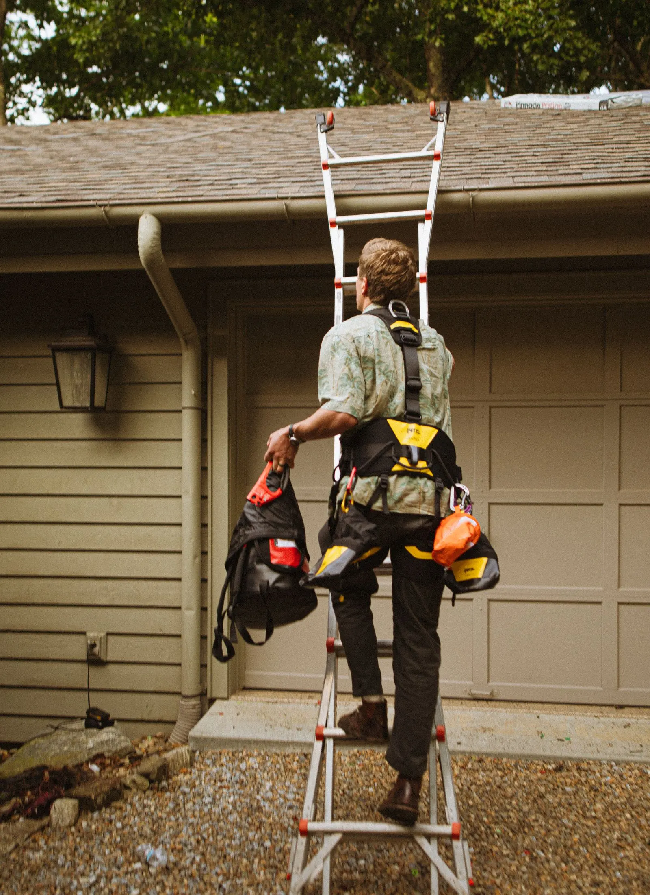

Roof repair
Missing and lifted shingles, leaks at vents and flashing, storm damage.

Their photo A new roof edge above a backyard pool
San Antonio, Texas & the surrounding area
Roof repair, roof replacement, flat and low-slope roofs, roof inspections and general home repairs, explained as plainly as a good inspection report.
5.0 on Google · Every Google review is five stars
I · The inspection
Four places where most roof trouble starts. Reviewers of C&S mention a thorough inspection; this is what that covers, in plain words.

12
3Missing, lifted, cracked or worn shingles; loose tabs after wind; granules collecting in the gutters.
The metal and rubber around vents, chimneys and walls, where most leaks find their way in.
Where two roof planes meet and water runs together; worn or lifted shingles show up here first.
Patio covers and low-slope roofs: ponding water, seams, and the edge where they meet the house.
Seeing one of these? Text a photo taken safely from the ground.
Text (210) 316-0886II · Services
Roofing first, plus the general home repairs that come up around it.
Missing and lifted shingles, leaks at vents and flashing, storm damage.

Old roofing off, the deck checked, a new roof on from the eaves to the ridge.

Their photoPatio covers and flat sections that hold water or leak at the edges.

A close look at shingles, flashing, valleys and flat sections, then a plain answer.
The handyman jobs around the house that come up alongside the roof.
III · Finished
Whether it is a patch or a whole new roof, these are the things to look for once the work is done. Easy to check from the yard.
IV · Where we work
On Facebook, C&S describes itself as a San Antonio and surrounding area roofing and general repair company.
Mission photos are illustrative stock images.
V · Questions
If you can see missing or lifted shingles, granules in the gutters, a bent vent or a new stain on a ceiling, it is worth a look. Stay off the roof yourself. Take photos from the ground and text them to (210) 316-0886.
Often, yes. Flat and low-slope sections leak where water sits or where they meet a wall or another roof. An inspection shows whether it is a patch, a section or the whole flat roof.
Insurance is one of the topics customers mention in C&S Roofing's Google reviews. Say that it is an insurance job when you call, and ask how they work with your paperwork.
Call or text (210) 316-0886, or use the email form on this page. Hours listed on Google are Monday to Saturday, 8 AM to 5:30 PM.
Your name, the part of San Antonio you are in, what you are seeing (leak, missing shingles, storm damage) and a few photos taken safely from the ground.
VI · Contact
Tell C&S what you are seeing and where you are. Photos from the ground help.
On Google
5.0
Every Google review is five stars.
Topics people mention
Direct lines
(210) 316-0886